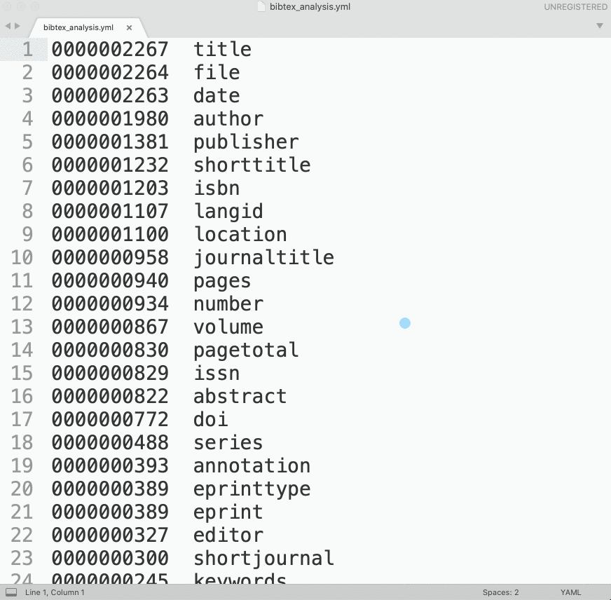

6 Lesson 06
6.1 Understanding Structured Data
Doing Digital Humanities practically always means working with structured data of some kind. In most general terms, structured data means some explicit annotation or classification that the machine can understand, and therefore — effectively use. When we see the word “Vienna”, we are likely to automatically assume that this is the name of the capital of Austria. The machine cannot know that, unless there is something else in the data that allows it to figure it out (here, an XML tag): <settlement country="Austria" type="capital city">Vienna</settlement> — from this annotation (and its attributes) the machine can be instructed to interpret the string Vienna as a settlement of the type capital city in the country of Austria. It is important to understand most common data formats in order to be able to create and generate them as well as to convert between different formats.
When we decide which format we want to work with, we need to consider the following: the ease of working with a given format (manual editing); suitability for specific analytical software; human-friendliness and readability; open vs. proprietary. In general, it does not make any sense to engage in the format wars (i.e., one format is better than another); one should rather develop an understanding that almost every format has its use and value in specific contexts or for specific tasks. What we also want is not to stick to a specific format and try to do everything with it and only it, but rather to be able to write scripts with which we can generate data in suitable formats or convert our data from one format into another.
Let’s take a look at a simple example in some most common formats.
6.1.1 XML (Extensible Markup Language)
6.1.2 CSV/TSV (Comma-Separated Values/ Tab-Separated Values)
to,from,heading,body
Tove,Jani,Reminder,Don’t forget me this weekend!6.1.3 JSON (JavaScript Object Notation)
6.1.4 YML or YAML (Yet Another Markup Language > YAML Ain’t Markup Language)
6.1.5 BibTeX: most common bibliographic format
We have already used this format in our lesson on sustainable writing. If you take a closer look at the record below, you may see that this format contains lots of valuable information. Most of this we will need for our project.
@incollection{LuhmannKommunikation1982,
title = {Kommunikation mit Zettelkiisten},
booktitle = {Öffentliche Meinung und sozialer Wandel: Für Elisabeth Noelle-Neumann = Public opinion and social change},
author = {Luhmann, Niklas},
editor = {Baier, Horst and Noelle-Neumann, Elisabeth},
date = {1982},
pages = {222--228},
publisher = {{westdt. Verl}},
location = {{Opladen}},
annotation = {OCLC: 256417947},
file = {Absolute/Path/To/PDF/Luhmann 1982 - Kommunikation mit Zettelkiisten.pdf},
isbn = {978-3-531-11533-7},
langid = {german}
}6.2 Larger Examples
NB data example from here.
There are some online converters that can help you to convert one format into another. For example: http://www.convertcsv.com/.
6.2.1 CSV / TSV
city,growth_from_2000_to_2013,latitude,longitude,population,rank,state
New York,4.8%,40.7127837,-74.0059413,8405837,1,New York
Los Angeles,4.8%,34.0522342,-118.2436849,3884307,2,California
Chicago,-6.1%,41.8781136,-87.6297982,2718782,3,IllinoisTSV is a better option than a CSV, since TAB characters are very unlikely to appear in values.
Neither TSV not CSV are good for preserving new line characters (\n)—or, in other words, text split into multiple lines. As a workaround, one can convert \n into some unlikely-to-occur character combination (for example, ;;;), which would allow to restore \n later , if necessary.
6.2.2 JSON
[
{
"city": "New York",
"growth_from_2000_to_2013": "4.8%",
"latitude": 40.7127837,
"longitude": -74.0059413,
"population": "8405837",
"rank": "1",
"state": "New York"
},
{
"city": "Los Angeles",
"growth_from_2000_to_2013": "4.8%",
"latitude": 34.0522342,
"longitude": -118.2436849,
"population": "3884307",
"rank": "2",
"state": "California"
},
{
"city": "Chicago",
"growth_from_2000_to_2013": "-6.1%",
"latitude": 41.8781136,
"longitude": -87.6297982,
"population": "2718782",
"rank": "3",
"state": "Illinois"
}
]6.2.3 YML/YAML
YAML is often used only for a single set of parameters.
city: New York
growth_from_2000_to_2013: 4.8%
latitude: 40.7127837
longitude: -74.0059413
population: 8405837
rank: 1
state: New YorkBut it can also be used for storage of serialized data. It has advantages of both JSON and CSV: the overall simplicity of the format (no tricky syntax) is similar to that of CSV/TSV, but it is more readable than CSV/TSV in any text editor, and is more difficult to break—again, due to the simplicity of the format.
New York:
growth_from_2000_to_2013: 4.8%
latitude: 40.7127837
longitude: -74.0059413
population: 8405837
rank: 1
state: New York
Los Angeles:
growth_from_2000_to_2013: 4.8%
latitude: 34.0522342
longitude: -118.2436849
population: 3884307
rank: 2
state: California
Chicago:
growth_from_2000_to_2013: -6.1%
latitude: 41.8781136
longitude: -87.6297982
population: 2718782
rank: 3
state: IllinoisYAML files can be read with Python into dictionaries like so:
You will most likely need to install yaml library; it is also quite easy to write a script that would read such serialized data.
Note on installing libraries for python. In general, it should be as easy as running the following command in your command line tool:
pip install --upgrade libraryNamepipis the standard package installer forpython; if you are running version 3.xx ofpython, it may bepip3instead ofpip. If you have Anaconda installed, you can also use Anacodnda interface to install packages;installis the command to install a package that you need;--upgradeis an optional argument that you would need only when you upgrade already installed package;libraryNameis the name of the library that you want to install.
This should work just fine, but sometimes it does not—usually when you have multiple versions of python installed and they may start conflicting with each other (another good reason to handle your python installations via Anaconda). There is, luckily, a workaround that seems to do the trick.You can modify your command in the following manner:
python -m pip install --upgrade libraryNamepythonhere is whatever alias you are using for runningpython(e.g., in my case it ispython3, so the full command will look:python3 -m pip install --upgrade libraryName)
6.3 In-Class Practice
Let’s try to convert this bibTex file into other formats. Before we begin, however, let’s break down this task into smaller tasks and organize them together in some form of pseudocode.
- Which of the above-discussed formats would be most suitable? Why yes, why no?
6.4 Homework
- Take your bibliography in
bibTeXformat and convert it into:csv/tsv,json, andyaml;- Hint: you should load your data into a
dictionary; - additionally, you might want to create (manually) a dictionary of
bibTeXfield: some of the fields are named differently, while they contain the same type of information — you want to identify those fields and unify them for your output format, which will improve the quality of your data (the process usually called normalization); hint: in order to figure out how to identify those fields, you may want to look into the Word Frequency program in Chapter 11. You can use this approach to identify all fields and count their frequencies, which will help you to determine which fields to keep and which to normalize (i.e., merge low-frequency fields into high-frequency fields).
- Hint: you should load your data into a
- upload your results together with scripts to your homework github repository
Python
- Work through Chapters 8 and 11 of Zelle’s book; read chapters carefully; work through the chapter summaries and exercises; complete the following programming exercises: 1-8 in Chapter 8 and 1-11 in Chapter 11;
- Watch Dr. Vierthaler’s videos:
- Episode 12: Functions
- Episode 13: Libraries and NLTK
- Episode 14: Regular Expressions
- Note: the sequences are somewhat different in Zelle’s textbook and Vierthaler’s videos. I would recommend you to always check Vierthaler’s videos and also check videos which cover topics that you read about in Zelle’s book.
Webscraping (optional)
- if you are interested in webscraping, you can check the following tutorials:
- Milligan, Ian. 2012. “Automated Downloading with Wget.” Programming Historian, June. https://programminghistorian.org/lessons/automated-downloading-with-wget.
- Kurschinski, Kellen. 2013. “Applied Archival Downloading with Wget.” Programming Historian, September. https://programminghistorian.org/lessons/applied-archival-downloading-with-wget.
- Baxter, Richard. 2019. “How to download your website using WGET for Windows.” https://builtvisible.com/download-your-website-with-wget/.
- Alternatively, this operation can be done with a Python script: Turkel, William J., and Adam Crymble. 2012. “Downloading Web Pages with Python.” Programming Historian, July. https://programminghistorian.org/lessons/working-with-web-pages.
Submitting homework:
- Homework assignment must be submitted by the beginning of the next class;
- Now, that you know how to use GitHub, you will be submitting your homework pushing it to github:
- Create a relevant subfoler in your
HW070172repository and place your HW files there; push them to your GitHub account;- Email me the link to your repository with a short message (Something like: I have completed homework for Lesson 3, which is uploaded to my repository … in subfolder
L03) - In the subject of your email, please, add the following:
CCXXXXX-LXX-HW-YourLastName-YourMatriculationNumber, whereCCXXXXXis the numeric code of the course;LXXis the lesson for which the homework is being submitted;YourLastNameis your last name, andYourMatriculationNumberis your matriculation number.
- Email me the link to your repository with a short message (Something like: I have completed homework for Lesson 3, which is uploaded to my repository … in subfolder
- Create a relevant subfoler in your
6.5 Homework Solution
Before we proceed, let’s make sure that you have the same folder structure on you machine. This will help to ensure that we will not run into other issiues and can focus on solving one problem at a time. (Please, download these files for L06_Conversion folder: unzip and move them all into the folder). The structure should be as follows:
.
├── MEMEX_SANDBOX
│ └── data
├── L06_Conversion
│ ├── comments.md
│ ├── pseudocode.md
│ ├── z_1_preliminary.py
│ ├── z_2_conversion_simple.py
│ ├── z_config.yml
│ └── zotero_biblatex_sample.bib
└── L07_Memex_Step1
├── ... your scripts ...
└── ... your scripts ...
NB: ./MEMEX_SANDBOX/data/ is the target folder for all other assignments to follow. This is where we will be creating our memex.
6.5.1 Pseudocode solution
- look at the file, i.e. check the file in order to understand it structure
- create a holder for our data, which will be
dictionary(dic, list, etc.) - read as one big string
- split into records using
\n@- we will get a list of strings
- loop through all the records:
NB: each records is a string that needs to be converted into something else.
- we need to split each record using
,\n - now we loop through the list of “key-value” pairs
type{citationkeyelement:- grab list element with index 0 (
citationkey = record[0]) - split the element on
{- recordType = element[0]
- citationKey = element[1]
- grab list element with index 0 (
- add a record into our
dictionaryusing citationKey as a key value - add recordType into the newly created record
- process the rest of the record:
- loop through the record, starting with 1:
for r in record[1:]:
- split every element on
=- key = element[0].strip()
- value = element[1].strip()
- add our key-value pair into the
dictionary
- loop through the record, starting with 1:
- we need to split each record using
- Save
dictionaryinto CSV, JSON, YAML
6.5.2 Scripts
Script 1: analyzing bibTex data (z_1_preliminary.py)
import os, yaml
###########################################################
# VARIABLES ###############################################
###########################################################
settingsFile = "z_config.yml"
vars = yaml.load(open(settingsFile))
###########################################################
# FUNCTIONS ###############################################
###########################################################
# analyze bibTeX data; identify what needs to be fixed
def bibAnalyze(bibTexFile):
tempDic = {}
with open(bibTexFile, "r", encoding="utf8") as f1:
records = f1.read()
records = records.split("\n@")
for record in records[1:]:
# let process ONLY those records that have PDFs
if ".pdf" in record.lower():
record = record.strip()
record = record.split("\n")[:-1]
for r in record[1:]:
r = r.split("=")[0].strip()
if r in tempDic:
tempDic[r] += 1
else:
tempDic[r] = 1
results = []
for k,v in tempDic.items():
result = "%010d\t%s" % (v, k)
results.append(result)
results = sorted(results, reverse=True)
results = "\n".join(results)
with open("bibtex_analysis.txt", "w", encoding="utf8") as f9:
f9.write(results)
bibAnalyze(vars['bib_all'])This script will create the file bibtex_analysis.txt, which will be a frequency list of keys from all bibTeX records. We would want to convert this frequency list into a YML file which we can then load with yaml library (make sure to install it!). Loading yml data into a python dictionary is as easy as: dictionary = yaml.load(open(fileNameYml)).
You can convert the frequency list into a proper yml file using regular expressions:

Script 2: loading bibTeX data and converting to other formats (z_2_conversion_simple.py)
import re
import yaml
"""
1. load bibtex file
- bibliography should be curated in Zotero (one can program cleaning procedures into the script, but this is not as reliable);
- loading bibtex data, keep only those records that have PDFs;
- some processing might be necessary (like picking one file out of two and more)
2. convert into other formats
- csv
- json
- yml
"""
###########################################################
# VARIABLES ###############################################
###########################################################
settingsFile = "z_config.yml"
settings = yaml.load(open(settingsFile))
bibKeys = yaml.load(open("zotero_biblatex_keys.yml"))
###########################################################
# FUNCTIONS ###############################################
###########################################################
# load bibTex Data into a dictionary
def bibLoad(bibTexFile):
bibDic = {}
with open(bibTexFile, "r", encoding="utf8") as f1:
records = f1.read().split("\n@")
for record in records[1:]:
# let process ONLY those records that have PDFs
if ".pdf" in record.lower():
record = record.strip().split("\n")[:-1]
rType = record[0].split("{")[0].strip()
rCite = record[0].split("{")[1].strip().replace(",", "")
bibDic[rCite] = {}
bibDic[rCite]["rCite"] = rCite
bibDic[rCite]["rType"] = rType
for r in record[1:]:
key = r.split("=")[0].strip()
val = r.split("=")[1].strip()
val = re.sub("^\{|\},?", "", val)
fixedKey = bibKeys[key]
bibDic[rCite][fixedKey] = val
print("="*80)
print("NUMBER OF RECORDS IN BIBLIGORAPHY: %d" % len(bibDic))
print("="*80)
return(bibDic)
###########################################################
# CONVERSION FUNCTIONS ####################################
###########################################################
import json
def convertToJSON(bibTexFile):
data = bibLoad(bibTexFile)
with open(bibTexFile.replace(".bib", ".json"), 'w', encoding='utf8') as f9:
json.dump(data, f9, sort_keys=True, indent=4, ensure_ascii=False)
import yaml
def convertToYAML(bibTexFile):
data = bibLoad(bibTexFile)
with open(bibTexFile.replace(".bib", ".yaml"), 'w', encoding='utf8') as f9:
yaml.dump(data, f9)
# CSV is the trickest because bibTeX is not symmetrical
def convertToCSV(bibTexFile):
data = bibLoad(bibTexFile)
# let's handpick fields that we want to save: citeKey, type, author, title, date
headerList = ['citeKey', 'type', 'author', 'title', 'date']
header = "\t".join(headerList)
dataNew = [header]
for k,v in data.items():
citeKey = k
if 'rType' in v:
rType = v['rType']
else:
rType = "NA"
if 'author' in v:
author = v['author']
else:
author = "NA"
if 'title' in v:
title = v['title']
else:
title = "NA"
if 'date' in v:
date = v['date']
else:
date = "NA"
tempVal = "\t".join([citeKey, rType, author, title, date])
dataNew.append(tempVal)
finalData = "\n".join(dataNew)
with open(bibTexFile.replace(".bib", ".csv"), 'w', encoding='utf8') as f9:
f9.write(finalData)
###########################################################
# RUN EVERYTHING ##########################################
###########################################################
print(settings["bib_all"])
#convertToJSON(settings["bib_all"])
#convertToYAML(settings["bib_all"])
#convertToCSV(settings["bib_all"])
print("Done!")